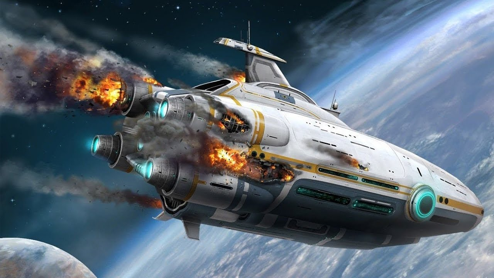
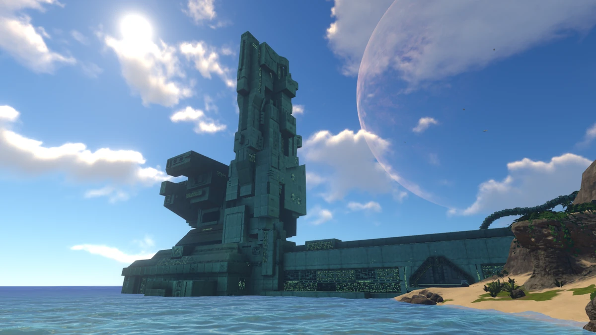
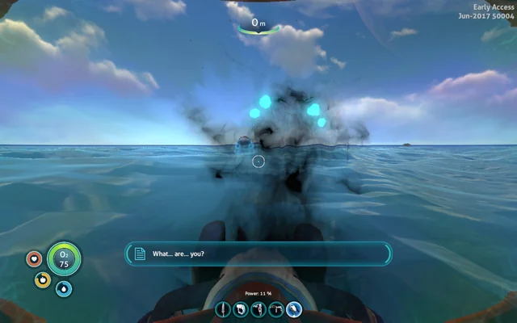

The Aurora attempts to perform a slingshot maneuver in the atmosphere of Planet 4546B with 157 people aboard to begin the construction of a new phase gate in the Ariadne Arm. A weird signal is detected coming from Planet 4546B and a moment later the Aurora is hit with some kind of energy weapon. The ship loses control and starts decending into the atmosphere of Planet 4556B causing its crew to initiate evacuation. 29 to 44 people manage to eject in Lifepods 1-25, but only ten manage to make it to the surface. You are one of those 10.

While you explore this new oceanic planet there are some mysteries beginning to pile up. Strange structures are seen built onto islands or deep into caves that were definitly made by some sort of beings stated to be "precursers".

One thing for sure is that the wildlife is extraordinarily different. They have adapted to the water based environment and made the best with what they have. But something is off. Something talked to you asking "what... are... you?". Seems like you are not the only curious one still left alive on this harsh planet.